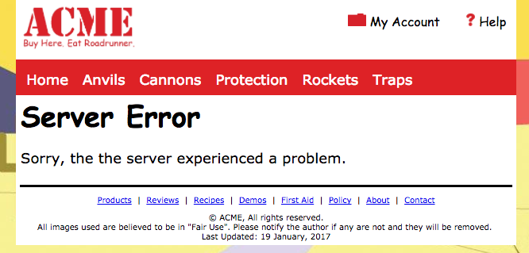

Enhancement 2
Purpose
This enhancement allows you to work with SQL statements that are used in CRUD interactions. These same interactions correspond with the privileges you gave to the proxy user when you created the acme database.
Video Demo
This short video demonstrates what your video of the connections objects being tested could look like.
Assumptions
This enhancement assumes:
- that you successfully created the acme database in your local XAMPP environment.
- the proxy user was also created in the PHPMyAdmin "User Accounts" tab.
- you know the proxy user's password and this user has all Data privileges.
Tasks
This enhancement has two distinct parts to it, 1) Writing SQL statements to use with the Acme database and 2) Creating PDO connection function to work with the acme database.
Storing the SQL Statements
The Introduction to SQL reading activity contains sample SQL statements for Selecting, Inserting, Updating and Deleting data from database table(s), you should have carefully reviewed these as part of this week's activities.
- You will create a new "sql" folder inside the acme folder.
- You will create a new "enhancement2.txt" file inside the sql folder where you will store the finished SQL statements.
- Build and test your SQL statements in the PHPMyAdmin tool's SQL tab after clicking on the acme database.
- When your statements are working correctly, copy and paste them into the enhancement2.txt file.
- This enhancement2.txt file will be submitted as part of the finished enhancement.
Writing SQL Statements
Write SQL statements to accomplish the following tasks:
- Insert the following new client to the clients table:
Tony, Stark, tony@starkent.com, Iam1ronM@n, "I am the real Ironman" - Modify the Tony Stark record to change the clientLevel to 3.
- Modify the "Nylon Rope" record to read "Climbing Rope". The change must change all instances of "nylon" to "climbing" in the record except the names of the images. Also, be sure that the invName field maintains its capital letter. (This is a "tricky" one. You will probably have to do some outside research to do this. Explore the SQL Replace function.)
- Use an inner join to select the inventory items that belong to the "Misc" category and include the name (not the categoryId number) of the "Misc" category in the list of items from the inventory table. (You don't need to include all data about these items. The item name and the category name would probably be enough, but you could include more if you wanted to.)
- Delete the Koenigsegg CCX car from the database. [Note: You can restore the Inventory table by importing the SQL file that was used to create it again].
- Create a video of you running all of these SQL statements and showing the result of running each SQL statement.
Build a Database Connection File
Create a basic php file as a connection file that contains a connection function (refer to the video in the Create a PDO Connection activity). The file should be in a folder named "library" and be named "connections.php".
- Create a PDO connection function for the acme database named acmeConnect().
- If and when the database connection fails, a generic failure page, built using your template file, should be delivered (using the PHP header function) that states the database could not be reached. See the image below as an example of what the page could look like:
 - Create a video that demonstrates that the connection works.
- In the same video demonstrate that errors are successfully caught when the connection fail and the error page is delivered.
Submission
- Build, test and run your SQL code in the XAMPP development environment's PHPMyAdmin tool.
- Work with your learning team to accomplish the task and post to and read the weekly discussion board to help one another.
- Check your work to ensure that it meets all of the expectations listed.
- When satisfied that the code is operational:
- Create the video(s) as explained showing the SQL statements in action and the connection object working and failing.
- Post your video(s) to your YouTube channel and copy the link(s) to the video(s) when published.
- Zip the acme folder and name it enhancement 2 (save this zip file outside of your web site)
- Submit the zip file to the enhancement 2 assignment dropbox and add the video URL(s) to the dropbox comment.
Grading Matrix
- All SQL statements are in a single file, named "enhancement2.txt" within a folder named "sql": 2 points
- The Tony Stark insert SQL statement works: 2 points
- The Tony Stark update SQL statement works: 2 points
- The nylon rope update SQL statement works: 4 points
- The select misc items SQL statement works: 2 points
- The delete Koenigsegg CCX SQL statement works: 2 points
- The database connection function is in a single file named "connections.php" within a folder named "library": 2 points
- The acme PDO connection function works: 6 points
- The acme PDO connection function fails and redirects to a generic error page: 3 points
- The video(s) of the SQL statements and connection function in action are present and demonstrate the actions called for: 2 points
- Total value: 27 points - all in objective 4